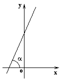
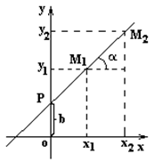

Уравнение прямой, проходящей через данную точку в заданном
направлении

Пусть прямая составляет угол  с
осью
с
осью  . Угловым коэффициентом прямой
. Угловым коэффициентом прямой  называется число .
называется число .
с
осью . Угловым коэффициентом прямой называется число .Прямая может быть задана точкой  и
угловым коэффициентом или двумя точками и
и
угловым коэффициентом или двумя точками и  .
.
и
угловым коэффициентом или двумя точками и .Уравнение прямой с угловым коэффициентом может быть получено из общего
уравнения прямой  , если
, если  , тогда ,
где и .
Прямая пересекает ось
, тогда ,
где и .
Прямая пересекает ось  в точке .
в точке .
может быть получено из общего
уравнения прямой , если , тогда ,
где и .
Прямая пересекает ось в точке .
Из уравнения прямой, проходящей через две точки, имеем
Отсюда Таким образом, Уравнение полученной прямой
принимает вид уравнения прямой с угловым коэффициентом ,
если .
,
если .